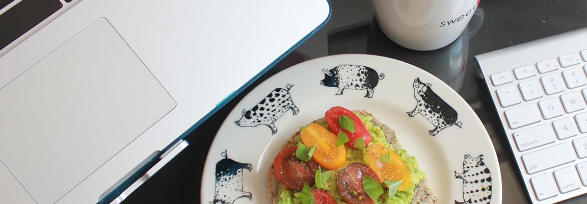

<div class="post-container">
	
	<div class="post-article">
		<p class="post_title">ПРАВИЛЬНЫЕ ИСТОЧНИКИ ГЛЮКОЗЫ ДЛЯ ТЕХ, КТО "РАБОТАЕТ ГОЛОВОЙ"</p>
		<p>Необходимость сфокусироваться на важной аналитической задаче или активный творческий процесс – штатные отговорки для сладкоежек. И тут понеслось…</p>

		<p>“Макет не клеится - хочу шоколадку...” “Чертов отчет, захвати мне на кухне печеньку...” “Давай выйдем за колой, а потом разберемся с этими багами...” “Остановите совещание, мне нужен кофе…” (с конфеткой конечно же)</p>

		<p>Правда ли, что сладкое - верный способ активировать работу мозга?</p>

		<p>Во время голодания организм сначала производит глюкозу из гликогена. Это наш “склад временного хранения” энергии, которая производится и накапливается “до востребования” в печени и мышцах.</p>

		<p>Если этот ресурс исчерпан, организм начинает сжигать жир и питаться кетонами - нашим запасным топливом. И надо сказать, что это более здоровая “еда для мозга”, чем глюкоза!</p>

		<p>Естественно, если в один момент лишить мозг всей глюкозы, которую он привык моментально и без напряжения получать из лакомств, произойдет стресс. Вы почувствуете перепады настроения или упадок сил.</p>

		<p>Отставить бунт! Со временем организм перестроится на новый для себя путь обмена, при котором место глюкозы занимают кетогенные тела. Мозг привыкнет к новому топливу, а качество его работы даже повысится</p>

		<h3>Правильные источники глюкозы - существуют??</h3>
		<p>В день достаточно съедать не больше 40-80 граммов сахаров + даже полезные сладости лучше употреблять в первой половине дня!</p>
		<p>В качестве второго завтрака в рационах Daily Formula предлагается</p>
		<p class="list_weight">порция фруктового салата, <br>
			запеченное яблоко или груша с изюмом и орешками, <br>
			творожный десерт с ягодами или медом, <br>
			конфетки из сухофруктов - фиников, кураги или чернослива, <br>
			брауни из цельнозерновой муки с органическим какао.</p>

		<p>Чтобы всегда оставаться в фокусе, “включайте голову” правильно и питайтесь сбалансированно. Просто приучите свой организм получать энергию из здоровых углеводов.</p>

		<p>Лидерами в данной пищевой группе являются:</p>

		<p class="list_weight">фрукты (финики, груши, инжир, хурма);<br>
			злаки (бурый рис, перловка, овсянка, пшеница, гречка); <br>
			ягоды (виноград, малина, черешня, клубника, вишня);<br>
			бобовые (фасоль, бобы, чечевица);<br>
			овощи (свекла, морковь, редька).</p>

		<p>Помните: “Нет на свете невозможных вещей. Бывают только вещи невозможные лично для тебя – причем временно невозможные, если правильно к ним относиться.” (с) Это же касается изменения наших пищевых привычек :)</p>
		<p class="data">13.11.2017</p>
	</div>
</div>